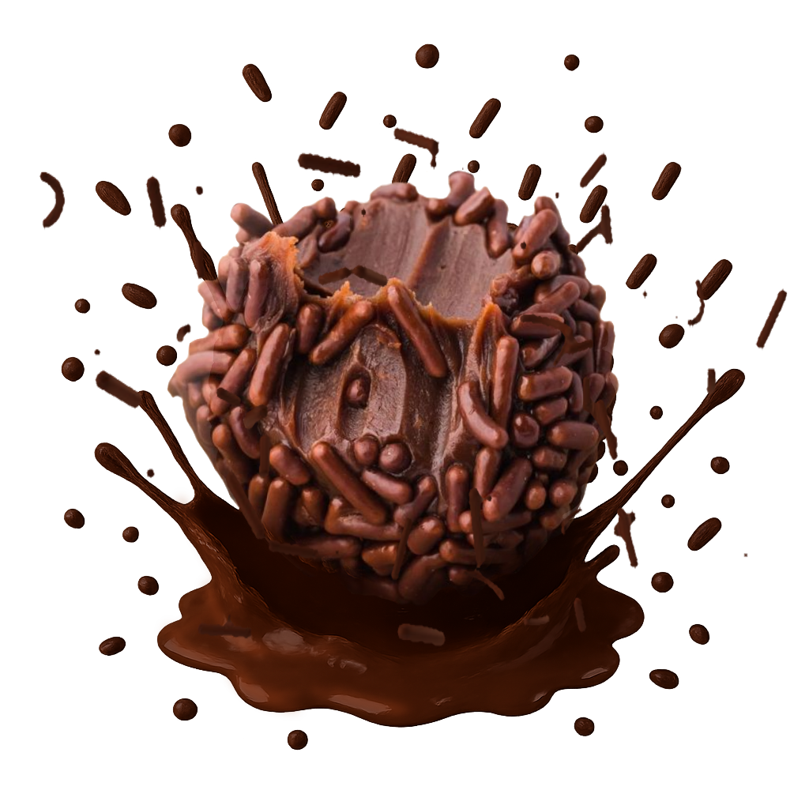
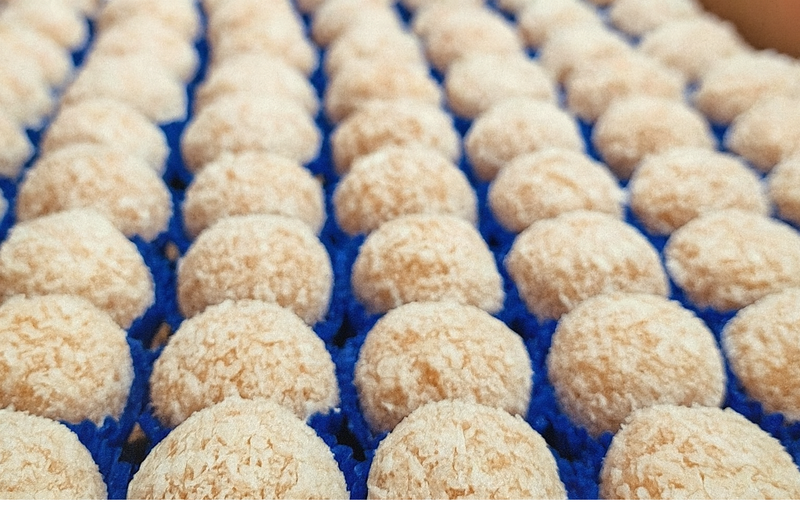
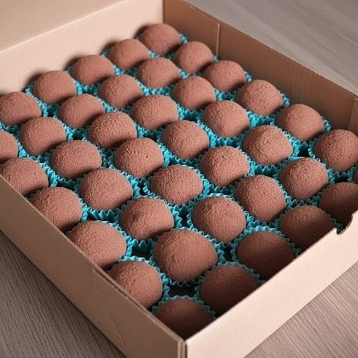
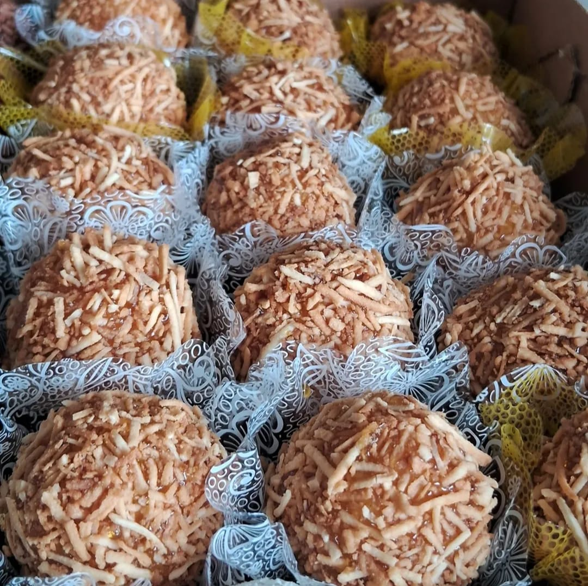
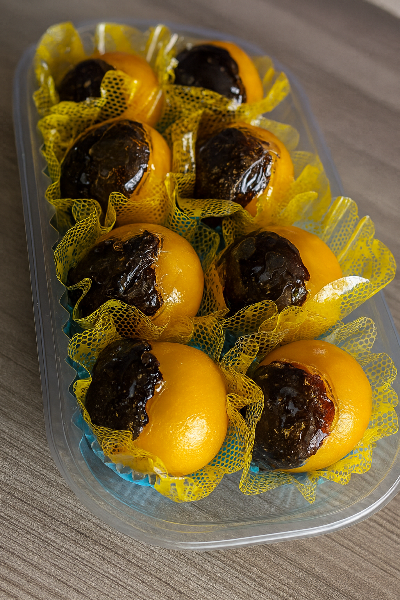

Dê uma Olhada em Nossos Docinhos

Brigadeiros de Chocolate
Brigadeiros de chocolate feitos com ingredientes selecionados. Enrolados à mão e finalizados com granulado crocante.

Beijinhos com Coco Clássicos
Beijinhos tradicionais de coco feitos com leite condensado e coco. Enrolados à mão e finalizados com coco ralado.

Brigadeiros de Chocolate Meio Amargo
Brigadeiros de chocolate meio amargo feitos com chocolate premium.

Ouriço de Coco Tostado
Docinhos de coco cremosos, enrolados à mão e finalizados com coco tostado, entregando textura crocante e sabor marcante.

Olhos de Sogra
Docinhos tradicionais, feitos com massa macia e recheados com ameixa, trazendo um contraste clássico e irresistível.

Docinhos Flocado de Coco
Docinhos de coco suaves e cremosos, enrolados à mão e finalizados com flocos delicados que derretem na boca.

Brigadeiros de Quindim
Cremosos e douradinhos, feitos com coco e gemas selecionadas. Enrolados à mão e finalizados com coco ralado.